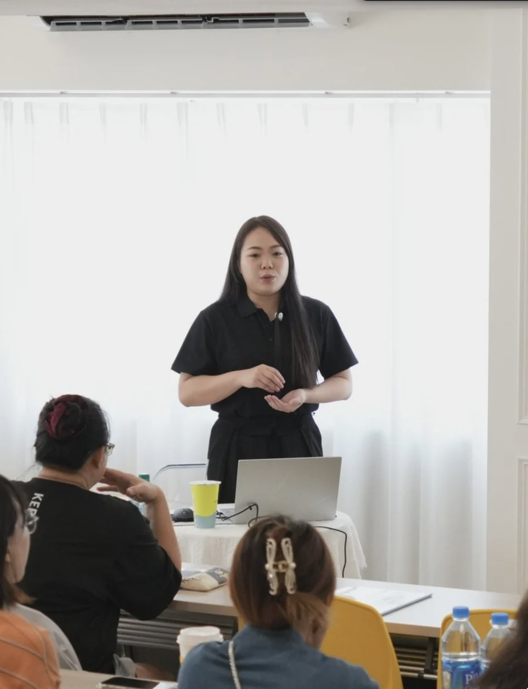

先講一件事
有些客人做一次就沒再來 他不一定嫌你做不好。他躺上去之後 說不出你跟上一間差在哪 下次就會拿價錢來比。說得出你的差別 他才有回來找你的理由
我自己遇過的一位客人
那位客人一躺上床就把毛巾抓在手裡。我請他放輕鬆 他點頭說好 手還是抓著不放。我換了力道 換了順序 他的肩膀還是聳著
以前我以為手法好就夠了。做到他這裡我才發現 他還沒準備好讓我做。他不知道我等一下會做到哪裡 不知道哪裡不會碰 也不知道不舒服的時候可以怎麼說
下一次我在動手前先講清楚。今天做到哪裡 大概多久 哪裡不做 毛巾怎麼蓋 不舒服隨時喊停。手放上去之後 他的肩膀慢慢放下來 抓著毛巾的手也鬆開了 手法才做得進去
手法和開口說明 這兩件事少一個都不行。後來我整理成完整班 兩件事都教
01 手法
上過很多課 結帳時客人還是問能不能算便宜一點。完整班的做法 是在操作前請客人先記住原來的感覺 做完一小段停下來 讓他自己說前後有什麼不一樣。客人記得的 是在你手上那幾分鐘
02 自己
手沒力 年資淺 旁邊又沒人看 練了半天不知道對不對。施力靠的是角度跟身體重量 手勁是其次。手感是拆開來 一輪一輪練出來的 現場會有人看你的手
03 客人
怕客人誤會 也怕家人誤會 學了也不敢開口。客人會想歪 多半是不知道你要做到哪裡。開始前講清楚範圍 界線 毛巾怎麼蓋 不舒服隨時喊停 他才放得下

主講老師
按摩十二年以上 現在教按摩師。當按摩師這些年 「妳做純的還是不純的」這句話我被問過很多次。後來做核心養護 反而是客人怕找到「不純」的服務。所以我在動手前 一定先把範圍和界線講清楚
2014 年開始按摩 跟過 9 位泰國老師 學費加起來超過上百萬 學完回來再依實際操作一點一點調整。完整班就是把這段路整理好 讓你不用出國 在台中 台北就能學
12+
年按摩工作經驗
10
位店裡一起工作的夥伴
3
個據點
中國醫藥大學
聘請的講師
現場怎麼上
看同樣的示範 每個人做出來都不一樣。一個人看影片練 很難發現自己哪裡偏掉 要嘛太大力客人痛 要嘛太輕客人沒感覺。現場會看你的定位 手位與發力 指出要調的地方 你馬上再練一輪
01
看示範
02
拆成分解動作
03
自己動手練
04
老師在旁邊看你的手
05
當場修正再練
教學內容
全身按摩
腰背 臀部 腿部 腹部 從背面到正面的完整照護
男士私密照護
陰囊 精索區 外部會陰的部位認識 外部手法與注意事項
發力與身體運用
站位 重心 力量控制與卸力 初階打基礎 進階深化
實用身體知識
圖解加實作認識構造 進階加入肌肉 骨盆與私密區的關聯
專業溝通與服務安排
詢問需求 確認同意 遮蓋 姿勢支撐 依感受調整或停止
泰式觀念穿插在每一段裡講
說清楚範圍
全身按摩 拉筋伸展。陰囊 精索區 外部會陰的外部照護。操作前先說明範圍 取得同意
陰莖接觸或操作。任何侵入性操作。以性刺激為目的的手法
客人說不要 覺得不舒服 身體狀況不確定的時候。以專業照護為原則 尊重隱私 個人意願與身體界線
選班原則
兩個班都教全身按摩跟男士私密照護 差別在要不要從按摩基本功開始。進階不必先上初階 也不需要事先學過私密按摩
完全沒學過按摩 不知道手怎麼放 力量怎麼用
→ 初階班
會一般按摩 完全沒學過男士下腹
→ 進階班
已經在做按摩 想學下腹也想改善出力方式
→ 進階班
| 項目 | 初階班 | 進階班 |
|---|---|---|
| 入班基礎 | 不需要按摩基礎 | 會一般按摩即可 |
| 從哪裡開始教 | 怎麼站 怎麼放手 怎麼出力 | 從你已有的按摩能力 |
| 怎麼學出力 | 穩定接觸 基本重心 平順卸力 | 力量傳遞 深淺控制 |
| 老師幫你什麼 | 示範帶練 建立信心 把流程接起來 | 找出費力處 修正細節 |
| 檢核重點 | 流程完整 動作穩定 溝通與停止 | 定位 力量控制 調整理由 情境應變 |
| 結業能力 | 通過檢核 完成 90 分鐘服務流程 | 依顧客回饋調整服務 |
三天課表
從零開始 學會一套 90 分鐘完整流程
第一天
站位 重心與發力 拉筋伸展 腰背 臀部 後腿 串成背面流程
第二天
正面腿部與腹部 私密部位認識與基本手法 翻身 遮蓋 溝通
第三天
背面到正面串接 時間安排 收尾與回饋 個別修正與實作檢核
適合沒有按摩經驗的人。90 分鐘指的是服務流程長度 課程本身為 3 天
深化發力 理解邏輯 學會依人調整
第一天
修正發力 拉筋伸展 腰臀腿核心操作
第二天
腹部與私密操作整合 理解構造與感受
第三天
依顧客需求調整流程 實作檢核
已會一般按摩就能上 不必先上初階。結業後把男士下腹照護融入服務 依顧客回饋調整姿勢 力道 節奏
報名完整班
3 天現場課 台中 台北就能學
每天 10:00–17:00 不用出國找泰國老師
一套從背面到正面的完整流程
拉筋伸展 腰背 臀部 腿部 腹部 串成可以直接排進服務的流程
男士私密照護的部位認識與外部手法
陰囊 精索區 外部會陰 做到哪裡 哪裡不做 一次學清楚
老師在旁邊看你的手 當場修正
站位 手位 發力 哪裡費力 哪裡不順 當場跟你說
客人躺上床前的開口說明
範圍 時間 遮蓋 確認同意 停止訊號 照著講就講得清楚
發力與身體運用
用角度跟身體重量出力 減少手腕 肩膀跟腰的負擔
實作檢核
第三天老師個別檢核 確認你做得出來才結業
這些內容整理自 12 年多的按摩工作 跟過 9 位泰國老師 學費超過上百萬的路
學費與開課日期
初階班｜3 天
NT$37,000
零利率分 6 期 每期約 NT$6,167
台中 11/28、29、30
台北 12/6、7、8
進階班｜3 天
NT$58,800
零利率分 12 期 每期 NT$4,900
台中 11/23、24、25
台北 12/13、14、15
2026 年開課。每日 10:00–17:00 中間用餐一小時 不附餐。付款方式與退費條件 都寫在報名頁
11/4（三）23:59 截止
掃 QR code 直接報名
用手機看的話 直接點 QR code 或下面的按鈕就能加 LINE。選好班別 日期與地點 確認付款和退費條件後就能完成報名
點我加 LINE 報名有任何班別的問題 直接加 LINE 詢問 告訴我們你有沒有學過按摩 想上台中還是台北 我們幫你對
常見問題
初階班從怎麼站 怎麼放手 怎麼出力開始教 老師示範帶練
不用。會一般按摩就能直接上進階 也不需要先會私密按摩
陰囊 精索區與外部會陰的外部照護。不碰陰莖 不做任何侵入性操作 也不教以性刺激為目的的手法。操作前一定先說明並取得同意
我不保證客人數量。我會帶你練好手法 說清楚範圍 排進你的服務